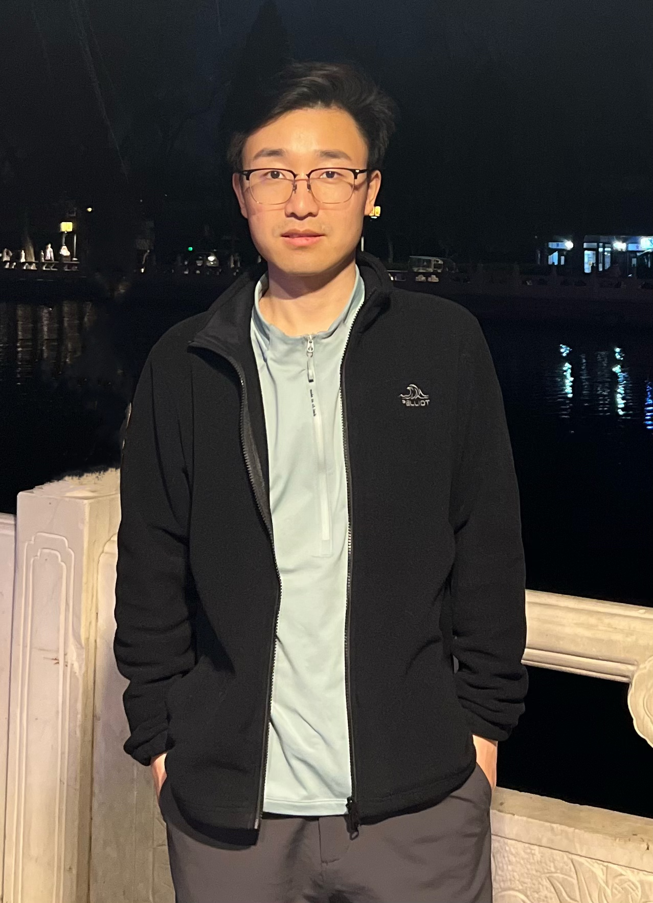

I am an AI/ML algorithm engineer at Meituan, currently working in the M17 (Large Model) department on multimodal data construction, model fine-tuning (SFT) and LLM application scenarios. Previously, I worked in the Vision Intelligence department on multimodal large models (MobileVLM), drone-based perception systems, and autonomous-driving point cloud algorithms, and at Beike on indoor 3D scene understanding.
My research interests focus on Multimodal Large Models, Diffusion Models (DDPM/DDIM/StableDiffusion/ControlNet), AIGC, and 3D Vision — with a strong focus on efficient model design, knowledge distillation, quantization and deployment on resource-constrained devices.
I have delivered multiple deep learning projects end-to-end, from system architecture design to production deployment. Passionate about technology, self-motivated, and enjoy collaborating with cross-functional teams.
Download CV